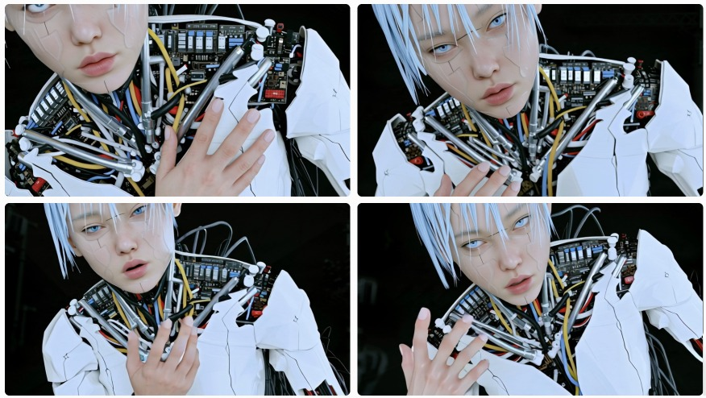

01
Malmoi
말모이
웹캠 손 인식과 검지 포인터로 즐기는 인터랙티브 전시. 웹과 TouchDesigner의 역할을 나누고, 3D 스캔 트리 파일을 경량화해 실시간 구동 문제를 해결했습니다. 참여도 약 65%.
웹캠 손 인식과 검지 포인터로 즐기는 인터랙티브 전시. 웹과 TouchDesigner의 역할을 나누고, 3D 스캔 트리 파일을 경량화해 실시간 구동 문제를 해결했습니다. 참여도 약 65%.
호텔 외벽 LED 미디어 파사드를 가정한 가상 제너레이티브 아트. 정원이 건물의 표면에서 숨 쉬듯 자라나는 장면을 그렸습니다.
공항 미디어월을 가정한 제너레이티브 미디어아트. 이동 중인 사람들 앞에서 떠다니는 생태계가 시선을 천천히 붙잡습니다.
빛을 현실과 비현실의 경계로 해석한 실험적 모션 미디어아트. 빛을 향해 진입하는 카메라와 유기적으로 움직이는 식물을 겹쳤습니다.

게임 〈Detroit: Become Human〉에서 영감을 받은 개인 작업. 인간과 안드로이드 사이의 경계를 영상으로 풀어냈고, 3D 렌더링과 실시간 연동 작업으로 확장해 완성할 예정입니다.
경험을 설계하는 것에서 멈추지 않고, 그것이 실제로 움직이는 것까지 만듭니다.
포트폴리오 자체를 인터랙티브한 웹 경험으로 설계합니다.
문제를 정의하고 해결해 나간 과정을 작업의 서사로 남깁니다.
경험 설계와 직접 구현을 함께 해냅니다.